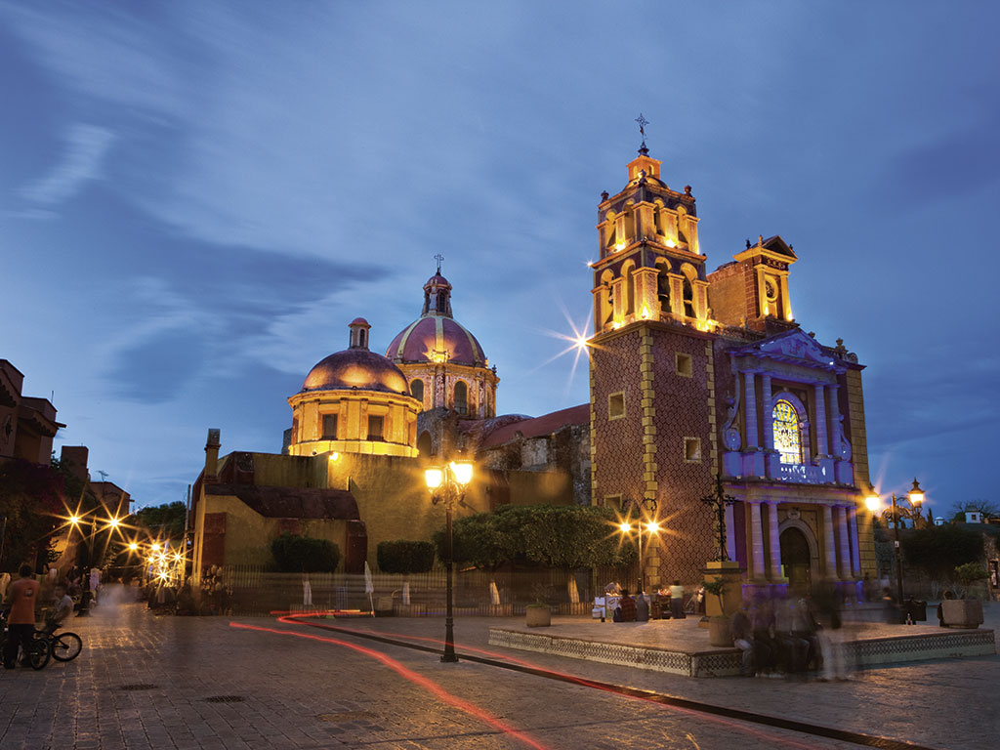
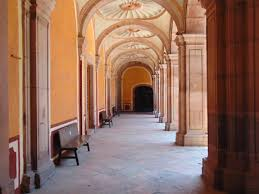

BIENBENIDOS A HORA DE AVENTURA
QUERETARO,QUERETARO
En Querétaro, hay una gran variedad de lugares turísticos para visitar, incluyendo lugares históricos, naturales y pueblos mágicos. Destacan el Centro Histórico de Santiago de Querétaro, declarado Patrimonio de la Humanidad por la UNESCO, así como la Reserva de la Biosfera Sierra Gorda
AMEALCO
-
Amealco
¿Cómo llegar a Amealco?
Si vas desde la Ciudad de México, puedes tomar la carretera México-Querétaro. Una vez que pases por San Juan del Río, toma la desviación de Santa Lucía-Amealco (el trayecto aproximado es de poco más de 2 horas). Si sales desde la capital queretana, puedes irte por la carretera 120 (el tiempo aproximado es de poco más de 1 hora).
-
Parroquia Santa María

Corresponde a los siglos XVIII, XIX y XX, pues del antiguo templo, de 1778, sólo conserva su torre, y el actual edificio fue levantado en 1882. La parroquia consta de planta en forma de cruz latina y posee nave, coro, presbiterio, sacristía y bautisterio. Como dato interesante cabe mencionar que aún conserva su piso original de duela de madera, con sus respiraderos de bronce. Su fachada está decorada con una escultura de la santísima Virgen María y se encuentra rematada por una inscripción en la que se alcanza a leer: “Se comenzó el día 1 de noviembre del año de MDCCCLXXXII (1882) y siendo párroco el MRPF Agustín González, se concluyó el día 1 de noviembre de MCMV (1905) siendo párroco el Pbro. Francisco Velázquez”
Se característica por su arquitectura de estilo Neoclásica, que data del siglo XVIII, su construcción inicio en 1775 y finalizado en 1905, siendo el templo más importante entre la comunidad amealcense.
PEÑA DE BERNAL
Bernal

Peña de Bernal es uno de los Pueblos Mágicos más encantadores de México, famoso por ser el hogar del tercer monolito más grande del mundo. En esta guía de viaje, escrita desde nuestra propia experiencia, te contaremos cómo llegar, qué hacer y te daremos recomendaciones muy útiles.
La Peña de Bernal se encuentra en el municipio de Ezequiel Montes, en el estado de Querétaro, a 50 kilómetros de Querétaro. Para llegar desde la capital del estado, dirígete a la Terminal de Autobuses de Querétaro, y el trayecto dura aproximadamente 1 hora.
Si viajas desde la Ciudad de México, debes dirigirte a la Central del Norte y tomar un autobús hacia Santiago de Querétaro. El recorrido dura unas 3 horas. Una vez en Querétaro, debes tomar otro autobús hacia la Peña de Bernal. Si tienes poco tiempo, puedes considerar unirte a esta excursión de un día.
Si viajas en grupo y no tienes carro, alquilar uno es una buena idea, ya que podrás viajar a tu ritmo sin depender de los horarios del transporte público, y al dividir el costo entre todos, podría resultar más económico que otros medios de transporte. Además, es una opción mucho más cómoda, si vas con niños o adultos mayores.
CADEYTA
-
Cadereyta
Transporte Público a Cadereyta en Santiago De Querétaro
¿Te preguntas cómo llegar a Cadereyta en Santiago De Querétaro, México? Moovit te ayuda a encontrar la mejor manera de llegar a Cadereyta con indicaciones paso a paso desde la estación de transporte público más cercana.
Moovit proporciona mapas gratuitos y direcciones en vivo para ayudarte a navegar por tu ciudad. Mira los horarios, las rutas, los servicios y descubre cuánto tiempo lleva llegar a Cadereyta en tiempo real.
¿Buscas la estación o parada más cercana a Cadereyta? Mira esta lista de paradas más cercanas a tu destino: Corregidora Sur Y Lázaro Cárdenas; Corregidora Y Lazaro Cardenas; Corregidora Y Jose Sotelo; Lateral Mexico-Queretaro Y Corregidora; Corregidora Y Arrollo Seco; Luis Pasteur Y Jose Sotelo; Corregidora Y Cto Moises Solana.
Autobús:
122
,
AIQ01
,
T-03
,
C-24
,
L-61
,
L-117
,
T-07
,
C-27
,
C-40
,
C-43
,
C-30
,
C-35
,
T-06
,
C-41
,
C-32
,
T-04
,
T-08
,
C-23
,
C-39
JALPAN
-
Jalpan
Uno de los pueblos mágicos y patrimonio mundial por la Unesco es Jalpan de Serra, un lugar de Querétaro y que forma parte de la Sierra Gorda, una zona natural repleta de montañas, cañones y cascadas.
Jalpan de Serra fue catalogado como Pueblo Mágico desde el año 2010, pues además de la belleza natural que lo rodea también resalta por el arte barroco que hay en sus construcciones y que son producto de las Misiones Franciscanas; además la presa Jalpan ubicada en este lugar desde el 2004 fue agregada a la lista de los Sitios Ramsar al ser considerado como un humedal de importancia internacional y por albergar aves migratorias.
Este lugar es ideal para practicar pesca deportiva, ciclismo de montaña, realizar caminatas mientras se disfruta de la variedad de flora y fauna que hay en el sitio, también se puede rentar una lancha o kayak para pasear por la presa.
Jalpan de Serra es perfecto para aquellas personas que les guste conocer lugares religiosos ya que, cuenta con dos de las Misiones Franciscanas del estado de Querétaro que son Santiago de Jalpan es una de las iglesias más importantes en su labor evangelizadora y otro lugar es el templo de Nuestra Señora de la Luz de Tancoyol, por lo que en estos sitios se puede conocer más sobre la importancia que tiene la religión católica.
Los platillos típicos de Jalpan de Serra son la cecina, acamayas (algo parecido a los camarones), enchiladas serranas, gorditas de horno, pan de pulque y el tamal zacahuil y en cuanto a bebidas destacan el atole de maíz de teja y el atole de guayabilla.
SAM JOAQUIN
-
San Joaquín
El encanto de San Joaquín se acrecenta con su altura, cuando el clima se vuelve frío y húmedo, con las construcciones y vestigios pictóricos, fríos testigos de la vida de sus antiguos pobladores. Además, la minería merece una mención especial en la historia prehispánica de San Joaquín, nombrado Pueblo Mágico en el año 2015.
Es aconsejable ir a San Joaquín en el mes de agosto, puesto que en este mes se realizan las celebraciones tradicionales más importantes. Otro evento regional para no perderse es el Concurso Nacional de Baile de Huapango, el cual se efectúa en abril.
Las tradiciones culinarias más representativas están representadas por la carne de puerco en salsa verde con nopales, la barbacoa de borrego y el mole. Los licores de fruta, especialmente los de durazno y manzana, son deliciosos, así como también el dulce de calabaza, el de chilacayote y el ate.
TEQUISQUIAPAN
-
Tequisquiapan

características
Tequisquiapan es una excelente opción para conocer más acerca del mundo vinícola y probar los mejores productos de queserías y vinícolas queretanas. Recorrer el pueblo es una grata experiencia pues además de admirar las calles y sus casas coloridas se puede caminar por las plazas, disfrutar de la gastronomía y conocer las artesanías del lugar. A “Tequis” acuden muchos visitantes para dar paseos en globo, incluso muchas parejas se han comprometido durante los viajes en globo mientras admiran la belleza de este lugar.
Los platillos típicos de Tequisquiapan son la barbacoa de chivo, consomé, menudo y sangre guisada, mole, carnitas de cerdo, chicharrón, gorditas y tostadas de maíz quebrado, y las tradicionales tortillas de diferentes colores que nunca faltan en las celebraciones y fiestas. Los dulces típicos son las charamuscas, los dulces de leche y las pepitorias. El pulque, así como en otros municipios, es característico de Tequisquiapan así como los curados de tuna.
Se incorporó al programa Pueblos Mágicos en el año 2012.
MUSEO REGIONAL DE QUERETARO
-
museo de queretaro
Tiene su sede en un área del antiguo Convento Grande de San Francisco de Querétaro, que es una de las construcciones virreinales más significativas de México, debido a su importante valor artístico y al papel que desempeñó como centro de evangelización y de promoción cultural, para el territorio de lo que actualmente es el estado de Querétaro. Forma parte del centro histórico de la ciudad, declarado Patrimonio Cultural de la Humanidad por la Organización de Naciones Unidas para la Educación y la Cultura. El inmueble histórico data del s. XVI, el cual tuvo un crecimiento notorio a principios del s. XVIII. Su fachada actual corresponde a una alteración ocasionada en el año de 1879, al demoler parte de una sección y la eliminación de una capilla adyacente. Las salas contienen colecciones diversas a través de las cuales se cuenta la historia de Querétaro y de México. Las colecciones están formadas por piezas arqueológicas, etnográficas, coloniales y contemporáneas constituidas por cerámicas, lítica, esculturas, pintura, muebles, vestimenta, armas, medios de transporte, fotografías, documentos y muebles.

Costos de Admisión: Entrada general $65. Estudiantes, maestros e INAPAM con credencial, menores de 13 años y discapacitados entrada libre. Domingos entradda libre al público nacional y extranjeros residentes.
Transporte público: Parabús Zaragoza y Vergara: Rutas 5,9,12,17,21,31,37,36,37,40,44 y 45. Parabús Universidad y Juárez: Rutas 17,19, 24,29,41,43,51,62,70,72,83 y 92. Qrobus Estación Alameda, Av. Constituyentes
MUSEO DE ARTE
Se encuentra en el ex convento de San Agustín, considerado uno de los claustros barrocos más importantes de América. Fue construido entre 1731 y 1743 bajo la supervisión de Fray Luis Martínez Lucio. Al paso del tiempo funcionó como Casa de Estudios Mayores de la Provincia Agustina de San Nicolás de Tolentino de Michoacán, cuartel militar, hospital y palacio federal, hasta que finalmente fue restaurado e inaugurado como museo el 22 de septiembre de 1988.
En el año 2000 fue dotado de una librería, equipos audiovisuales y de cómputo, con fondos del Programa de Apoyo a la Infraestructura Cultural de los Estados (PAICE) del Consejo Nacional para la Cultura y las Artes.
Tiene el objetivo de difundir la obra plástica de artistas, estatales, nacionales y extranjeros, así como organizar actividades encaminadas a la preservación del patrimonio histórico y a la difusión de la cultura y las artes.
Exhibe, principalmente, obras manieristas, barrocas, neoclásicas y modernas, procedentes de la Academia de San Carlos y de otras donaciones de artistas mexicanos.
MUSEO DE ARTE CONTEMPORANEO
Museo de arte contemporaneo
-
El Museo de Arte Contemporáneo está ubicado en un inmueble que antiguamente formaba parte del convento de la Santa Cruz. Cuenta con una mediateca, biblioteca, sala de arte digital, un laboratorio y un archivo
El acervo de este museo fue donado por los artistas que ahí exponen su obra.
Es uno de los proyectos más relevantes del estado en materia de infraestructura cultural y cuenta con una superficie de terreno de 2 mil 400 metros cuadrados.
Las colecciones y exposiciones sumaron a las pinturas y esculturas tradicionales estas nuevas obras con tipologías y materialidades muy variadas, que incluyen objetos cotidianos, alimentos, seres vivos, materiales de desecho, basura, sonido, imágenes en movimiento y tecnologías de vanguardia
MUSEO DE CALENDARIO
INFORMACIÓN GENERAL
Horarios: Martes a domingo de 10 a 18 h.
Costos de Admisión: $ 25.00: Entrada general $ 15.00: Niños, adultos mayores con credencial INAPAM y estudiantes con credencial vigente. Entrada sin costo: Grupos escolares de nivel básico. PREVIA RESERVACIÓN
MUSEO DE LA CIUDAD
-
museo de la ciudad
Ubicado en un antiguo convento del siglo XVII, el Museo de la Ciudad de Querétaro es un espacio de encuentro entre la historia y el arte contemporáneo. Con una variedad de exposiciones permanentes y temporales, ofrecemos una experiencia cultural única.
El Convento de Religiosas Capuchinas se transformó desde 1997 en el Museo de la Ciudad con la misión privilegiada de difundir el arte contemporáneo. Entre sus paredes late la diversidad, conversan lo antiguo del recinto con las voces de los artistas del siglo XXI, y sus patios entrecruzados, sus pasillos misteriosos y sus amplias salas plenas de luz son el escaparate para creadores locales y foráneos.
MUSEO DE LOS CONSPIRADORES
-
Museo de los conspiradores
Este museo muestra los diversos procesos, de enorme complejidad, que se desataron a partir de las ideas ilustradas, que buscaron romper con el absolutismo monárquico del antiguo régimen y dar paso a las ideas e instituciones modernas, características del nuevo régimen, haciendo uso de la conspiración como estrategia principal. En una visión global se explican los procesos francés, norteamericano, hispanoamericano y novohispano, interconectados y con influencias recíprocas. En esta trama de intrigas y conspiraciones, la ciudad de Querétaro tuvo un papel fundamental en el desencadenamiento de la Independencia de México.
INFORMACIÓN GENERAL
Horarios: Martes a domingo de 10:30 a 18:30 hrs.
Costos de Admisión: Entrada libre.
Transporte público: Paradas de Qrobus Av Zaragoza-Alameda Av Zaragoza-Tanque Calle Esequiel Montes esquina Av. Hidalgo. Centro Histórico
EL MUSEO LA ZACATECANA
La leyenda cuenta que “La Zacatecana” mandó a matar a su marido y después mató al ejecutor del asesinato, enterrado a ambos en las caballerizas, sin que se supiera del doble crimen. Tiempo después, narra el museo en su sitio web, la mujer amaneció asesinada, quedando en misterio de quién fue el autor de la venganza
CERRO DE LAS CAMPANAS
-
cerro de las campanas
-
El inmueble que lo alberga fue construido en agosto de 2003 en el interior del Parque Cerro de las Campanas, en la ciudad de Querétaro. En su primera etapa llevó por nombre Museo de Sitio Cerro de las Campanas, posteriormente se conoció como Museo de La Magia del Pasado y a la fecha se le denomina Museo Cerro de las Campanas.
Contenido temático de las 5 salas permanentes:
Sala 1. representa ese tejido social multiétnico que habitó la región desde La Cañada hasta lo que es ahora El Pueblito y del proceso de aculturación que se dio tras la conquista Española, dando inicio a la fundación de la Ciudad.
Sala 2. nos inserta en el desarrollo Económico de Querétaro, durante el siglo XVII y XVIII basado principalmente en las haciendas y en los obrajes donde se llevó a cabo la producción agrícola y textil respectivamente.
Sala 3. nos habla de la Historia de Querétaro a partir de la Guerra de Independencia contra la España colonial en 1810.
Sala 4 . Aquí se presenta la caída del efímero segundo imperio con Maximiliano al frente y la Restauración de la República, comandada por el Presidente Benito Juárez tras el oneroso sitio a la ciudad.
Sala 5. Se desarrollan actividades tendientes a conocer el Porfiriato como causa primordial de una Revolución armada en 1910 y que culminó con el Congreso Constituyente de Querétaro en 1917 para crear la Constitución Política de los Estados Unidos Mexicanos que a la fecha nos rige.
INFORMACIÓN GENERAL
Horarios: Martes a domingo de 9 a 17 h.
Costos de Admisión: $18.00 precio por adulto. Entrada general $18. Menores de 18 años, trabajadores del municipio de Querétaro, personas con capacidades diferentes y adultos mayores entrada libre.
Transporte público: Circuito Cerro de las Campanas. Circuito Universitario.
Zona Arqueológica y Museo de Sitio El Cerrito
-
zona arqueologica
-
Fue inaugurado en el marco de las conmemoraciones por el 80 aniversario de la fundación del INAH.
El museo se encuentra edificado sobre una extensión de 350 m2, con piedra de la región.
El arqueólogo Daniel Valencia, autor del guión científico y director del proyecto de investigación, explica que El Cerrito es el centro ceremonial más norteño de Mesoamérica, construido por los toltecas.
La historia del sitio arqueológico se narra a través de cuatro secciones museográficas en las que se exhiben alrededor de 170 piezas, la mayoría de ellas recuperadas durante los trabajos de exploración en el lugar, como resultado del proyecto de investigación arqueológica.
También se exhiben dos colecciones particulares que fueron entregadas al INAH para su custodia, y objetos que pertenecen al Museo Regional de Querétaro. Entre las piezas destaca una estela con la imagen de la diosa Itzpapálotl (mariposa alas de obsidiana), la deidad que veneraron los toltecas en El Cerrito.
Sala 1. El origen tolteca, la Tollan mítica y Chicomóztoc de 56 m².
En esta sala se narra, mediante un gráfico, el mito de origen, idea pintada en el códice Cuauhtinchan 2 en donde se observa a Chicomoztoc, el cerro de las siete cuevas, de donde nacen los siete pueblos tolteca chichimecas; la Tollan mítica, ese lugar primigenio donde los hombres tenían todos los abastecimientos para su existencia y convivían con sus dioses principales.
Cuando ellos decidían que pueblos debían venir a la tierra a poblarla, les asignaban un dios patrono y una lengua en particular. En la sala también podrás disfruta de la única estela en piedra de Mesoamérica con la representación de la diosa Itzpapálotl, que fue quien guio a los pueblos tolteca chichimecas a la zona sur del valle de Querétaro en dónde se construyó el centro ceremonial en su honor. De igual forma, se puede observar una línea del tiempo con los principales sitios toltecas de Mesoamérica: Tula Chichén Itzá, Tututepec y El Cerrito.
Sala 2. Construcción del Espacio Sagrado de 151 m².
El visitante puede disfrutar de gráficos diseñados para ejemplificar la idea de que la pirámide representa uno de los tres segmentos que forman el cosmos de acuerdo a los toltecas, siendo su lugar de construcción un punto por donde pasaba el eje cósmico, el cual unía el piso cósmico del cielo, con el piso terrenal y el inframundo.
Se aprecia también, una muestra de escultura con glifos calendáricos y un clavo arquitectónico con cabeza de serpiente. La sala termina con una maqueta en donde se reconstruye la forma original del centro ceremonial teniendo como referente la pirámide, misma que se puede observar a través del único ventanal del museo.
Sala 3. La sacralización del Espacio de 66 m².
En esta sala se muestran sahumadores de mano, en cuyo interior fueron quemadas puntas de sílex blanco, cuentas con forma de cráneos, cuentas de concha y tubillos de obsidiana, piezas que forman parte de una ofrenda constructiva dedicada a la diosa Itzpapálotl y que fue descubierta por los arqueólogos en el interior de un pequeño altar. Todos estos objetos comparten el espacio con esculturas de gran formato, como son los coronamientos. Estas esculturas, talladas en rocas blandas, decoraban la parte superior de las fachadas de las salas con columnas.
Sala 4. El uso cotidiano del espacio sagrado de 85 m²
La pieza central de esta sala corresponde a un brasero con forma de reloj de arena, en cuyo interior fueron quemados diversos objetos como punzones de hueso, puntas de proyectil, malacates de barro, dijes de concha y un anillo del mismo material. Estos braseros se encontraban en plazas y altares en donde se sacralizaban los espacios y depositaban ofrendas a los dioses. El visitante puede observar piezas en exhibición que no fueron quemadas tales como conchas de abulón, malacates de barro decorados con chapopote, figurillas de barro y hasta un cascabel de cobre. En los planos expuestos en esta sala, se describe la procedencia de estos objetos, así como también la circulación de símbolos y representaciones toltecas como las de Chac Mool e Itzpapálotl en Mesoamérica.
Jardín. El piso cósmico terrenal de 78 m².
El jardín central del museo fue diseñado para ofrecer una interpretación del plano terrenal tal como lo concebían los Toltecas. De acuerdo con el códice La Historia Tolteca Chichimeca, el piso terrenal, el cual se dividía en cuatro rumbos, estaba sostenido por igual número de árboles cósmicos. El rumbo oriente, identificado con el color rojo era sostenido por un árbol de ceiba. El rumbo sur lo sostenía el maguey manso, el poniente la palma Izote y el rumbo norte era soportado por el árbol cósmico del mezquite. Estos árboles forman parte del entorno natural actual, y en su momento representaban elementos terrenales del espacio sagrado.
Nuevo Wamerú Gran Reserva Ecológica
-
zoologico
-
el Zoológico Wamerú, que ahora se conocerá como Gran Reserva Ecológica Wamerú, y reabrirá el próximo 21 de marzo, para en diciembre hacer su relanzamiento.
El zoológico aún es el mismo. Los trabajos de remodelación apenas comienzan. Los hábitats de las diferentes especies de animales que ahí viven siguen siendo los mismos… por ahora.
Los búfalos cafre, originarios de África observan a lo lejos a los humanos que guiados por Alejandro Mendoza, responsable técnico ante la Semarnat de la Gran Reserva Ecológica Wamerú, explica a los invitados especiales y representantes de los medios de comunicación los diferentes hábitats de las especies animales. Desde los gansos y flamingos, hasta los leones y antílopes, especies que llaman la atención por ser exóticas y de otros continentes lejanos.
Cocodrilos bajo el agua, jabalíes, leopardos, tigres, jirafas, lemures, chimpancés, son algunas de las especies que tendrán mejores espacios, luego de que en semanas pasadas se denunciará el mal estado de los espacios para los animales.
LUGARES DONDE COMER
ASADOR BACANORA
ASADOR BACANORA
-